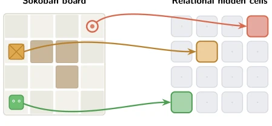
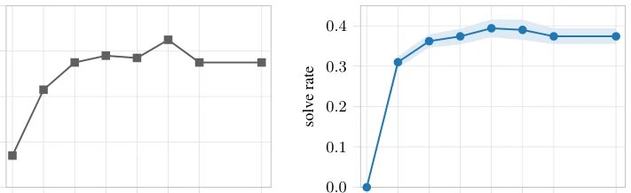
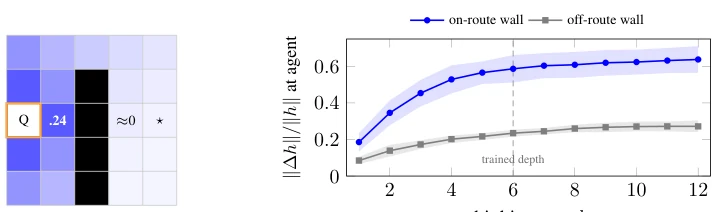
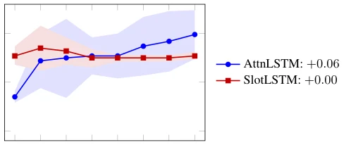
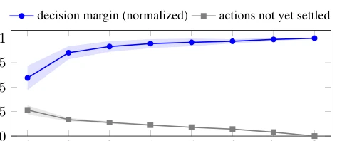

This paper casts doubt on "model-free planning is possible", but the argument is well-founded. It points out that so-called emergent planning is actually not magic, but the credit of architectural priors. The authors did not pursue elaborate RL algorithms, but instead focused intently on neural network structures, proving that planning only emerges when environmental states are "bound" to specific hidden units. However, this strong constraint (each grid cell corresponds to a unit) is difficult to replicate in general Transformers, as position encoding and feature mixing in large models are not that clean. The conclusion is strong: without binding, there is no planning. This explains why some models can plan while others cannot, but also exposes the limitations of current architectures in generalization. Although experiments are perfect on grid tasks like Sokoban, whether this rigid binding remains effective when generalized to continuous spaces or complex visual tasks remains unknown.
研究动机Motivation
传统 RL 分模型基（planning）和模型无关（reactive），但 Guez et al. [9] 发现模型无关的 DRC 也能规划。Bush et al. [2] 进一步解码出内部规划轨迹。问题在于：这到底是算法特性还是架构特性？现有工作没隔离出决定性因素。本文旨在回答：在纯奖励最大化下，何种函数近似器属性能催生规划？这关乎我们如何理解智能体的内部计算，以及规划是否真的能从纯强化学习中涌现。若无法区分，我们就无法设计更通用的规划架构。此外，这还触及了认知科学中关于大脑如何存储关系记忆的问题，若 RL 中的规划机制与海马体类似，则对理解生物智能有启示。
Traditional RL is divided into model-based (planning) and model-free (reactive), but Guez et al. [9] found that model-free DRC can also plan. Bush et al. [2] further decoded internal planning trajectories. The question is: is this an algorithmic property or an architectural property? Existing work has not isolated the decisive factor. This paper aims to answer: under pure reward maximization, what function approximator properties can give rise to planning? This concerns how we understand the internal computation of agents, and whether planning can truly emerge from pure reinforcement learning. If we cannot distinguish, we cannot design more general planning architectures. Furthermore, this touches upon the question in cognitive science about how the brain stores relational memory; if the planning mechanism in RL is similar to the hippocampus, it offers insights for understanding biological intelligence.
The core is Relational Hidden States (Relational Hidden States). Definition 3.1 states that hidden units are updated via message passing. The innovation lies in State-Graph Binding (State-Graph Binding): environmental states must be mapped to specific hidden units (e.g., convolutional encoder fixed binding). Architecture comparison: AttnLSTM (attention mechanism, relations learnable, binding fixed) vs SlotLSTM (free slots, binding needs learning). Flow: Input encoding -> Binding to units -> Multi-step thinking (message passing) -> Policy reading. Thinking steps are equivalent to implicit lookahead, relation weights implicitly encode the transition model. AttnLSTM uses dense attention to replace convolutional kernels, proving that even without fixed neighborhoods, planning can emerge from rewards as long as binding exists. SlotLSTM attempted to learn binding but failed, indicating binding is an architectural prior rather than a learning result. This mechanism transforms planning into a message passing process, requiring no explicit world model.

Figure 1: State-graph binding. Each Sokoban board square (left) is bound to one relational hidden cell (right) of the neural network via a fixed indexing (color-matched arrows and cells).
Tested on Boxoban/Sokoban. Metrics include solve rate, goal-directed move ratio, decision margin. AttnLSTM performance improves after increasing thinking steps (Fig 2, 4), attention weights converge to the true transition graph (Fig 3). SlotLSTM control group, due to inability to stably bind, shows no performance improvement and planning does not emerge. Ablation experiments prove binding is load-bearing. Conclusion: The relational mechanism itself is insufficient, must be paired with state binding. Experiments show increasing thinking steps refines decisions, but SlotLSTM shows no improvement even with increased steps, confirming the necessity of binding for planning emergence. Furthermore, through intervention on hidden states, the authors verified causality, proving planning trajectories indeed exist internally within the network, not as external heuristics.

Figure 2: Additional test-time computation improves solving. Solve rate on held-out Boxoban valid_medium. (a) For the pretrained DRC(3,3) of Taufeeque et al. [33], additional computation is provided by forced no-op pondering steps, following Guez et al. [9]. (b) For our AttnLSTM, additional computation is provided by increasing the number of inner recurrent thinking ticks before acting. Both agents improve with extra test-time recurrent computation, but the horizontal axes represent different interventions and are therefore shown separately.

Figure 3: The attention routing is an amortized transition model. (a) A cell Q’s settled attention concentrates on feasible one-step successors (≈0.24 at one hop) and decays geometrically with graph distance (ρ ≈0.61). Its attention to cells made unreachable by a wall is approximately zero. (b) Turning a floor tile on the agent’s route into a wall shifts the current position’s hidden cell 2.3× more than turning an off-route tile at a matched distance into a wall. Additionally, the intervention flips the agent’s greedy move on 19% of route-blocked boards, compared with 7.2% of off-route boards: a change to the dynamics propagates along the graph and rewrites the plan.

Figure 4: Thinking improves the decision only in the bound core. At each thinking step k, the greedy action is read from the intermediate hidden state through the model’s own trained actor head, on the initial observation of each of 512 held-out boards, and scored by whether the first move is goalward. We restrict to hard levels with agent-to-goal distance of 8–12 hops, where lookahead matters most. Here, the attention core keeps improving through the final thinking step (+0.06); the slot control is flat (+0.00).

Figure 5: Each thinking step refines the decision. At every thinking step k of the AttnLSTM we read the policy from the intermediate state hk t through the trained actor head. The margin on the chosen action, the top-1 minus top-2 action logit, is shown normalized to its converged value (blue) and rises monotonically to 1, while the fraction of boards whose greedy action has not yet reached its settled value (grey) falls from 27% to 0: the decision sharpens and converges by step 8.